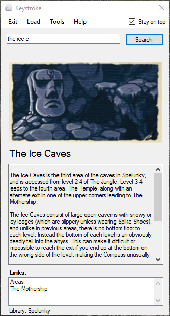

Keystroke is an extensively customizable offline/personal wiki.
Here's an example wiki page:
Download the library you want and place it in your "pages" folder. Make sure that the .ks file is not in the main folder.
Open Keystroke. You'll be asked to load a library. Press the Load button and navigate to the .ks file.
All done!